只按你输入的参数作数学试算，不是建议的仓位。设置只存在这台设备的浏览器。
| 香港 | 美东 | 事项 |
|---|---|---|
| 21:47 | 08:47 | 系统开盘前更新（盘前价格重算） |
| 22:30 | 09:30 | 美股开盘 |
| 23:00 | 10:00 | 开盘首 30 分钟完结（开盘情景判定） |
| 02:00（翌日） | 13:00 | 美股收盘（提早收盘） |
| 触发条件（QQQ） | 距参考价 | 意义 | |
|---|---|---|---|
| ↑ | 收盘重上 21EMA 666.84 | +4.1% | 试仓闸门的价格条件（另需分数 ≥ 40，现 29） |
| ↑ | 收盘重上 200 日线 683.50 | +6.7% | 长线分界；重上之前，反弹先当阻力看 |
| ↑ | 收盘重上 50 日线 707.05 | +10.3% | 多头闸门的价格条件（另需 Regime A 或 B） |
| ↑ | FTD：反弹第 4 日起，单日升 ≥ 1.25% 且成交高于前一日 | — | 试仓闸门打开（标准风险的 25%）；下一个交易日是第 4 日 |
| ↓ | 跌穿调整低位 606.23 | -5.4% | 反弹尝试作废，重新计日 |
| 简报日 | 分数 | 闸门／周期 | 首选／变化 |
|---|---|---|---|
| 11-27（五） 今次 更新 11-26 02:11 | 29 E | 空头开 调整中，反弹尝试第 3 日 | 预备 USFD、AHR、HOG、AIZ、ALLE +AHR +HOG −LH −MRSH |
| 11-25（三） 更新 11-25 01:45 | 24 E | 空头开 调整中，反弹尝试第 2 日 | 预备 LH、USFD、AIZ、ALLE、MRSH |
| 11-24（二） | 18 E | 没有执行纪录；分数按今日的数据回算 | |
| 11-23（一） | 20 E | 没有执行纪录；分数按今日的数据回算 | |
| 11-20（五） | 18 E | 没有执行纪录；分数按今日的数据回算 | |
| 11-19（四） | 27 D | 没有执行纪录；分数按今日的数据回算 | |
| 11-18（三） | 26 D | 没有执行纪录；分数按今日的数据回算 | |
| 11-17（二） | 32 D | 没有执行纪录；分数按今日的数据回算 | |
| 11-16（一） | 45 C | 没有执行纪录；分数按今日的数据回算 | |
| 11-13（五） | 46 C | 没有执行纪录；分数按今日的数据回算 | |
| 代码 | 形态 | 清单 | 趋势 | RS | 板块 | 收缩 | 成交 | 资金 | 距离 | 事件 | 收盘 | 技术触发位 | 现价距触发位 | 形态失效位 | 风险 | 试算股数 | RS | 板块 | 财报日 |
|---|---|---|---|---|---|---|---|---|---|---|---|---|---|---|---|---|---|---|---|
| USFD | 收窄＋抗跌强势 | 8/8 | ✓ | ✓ | ✓ | ✓ | ✓ | ✓ | ✓ | ✓ | 111.66 | 112.04 | -0.3% | 104.97 | 6.3% | 26 | 90 | 必需消费（第 1） | — |
| AHR | 收窄＋抗跌强势 | 8/8 | ✓ | ✓ | ✓ | ✓ | ✓ | ✓ | ✓ | ✓ | 60.24 | 60.75 | -0.8% | 56.80 | 6.5% | 47 | 89 | 房地产（第 2） | — |
| HOG | 收窄＋抗跌强势 | 7/8 | ✓ | ✓ | ✗ | ✓ | ✓ | ✓ | ✓ | ✓ | 34.20 | 34.43 | -0.7% | 32.00 | 7.1% | 76 | 99 | 非必需消费（第 5） | 02-10 |
| AIZ | 收窄 | 7/8 | ✓ | ✓ | ✗ | ✓ | ✓ | ✓ | ✓ | ✓ | 325.73 | 328.07 | -0.7% | 312.17 | 4.8% | 11 | 97 | 金融（第 7） | 02-09 |
| ALLE | 收窄＋抗跌强势 | 7/8 | ✓ | ✓ | ✗ | ✓ | ✓ | ✓ | ✓ | ✓ | 192.20 | 193.99 | -0.9% | 182.34 | 6.0% | 16 | 94 | 工业（第 9） | 02-16 |
| 代码 | 形态 | 尚欠甚么 | 清单 | 趋势 | RS | 板块 | 收缩 | 成交 | 资金 | 距离 | 事件 | 收盘 | 技术触发位 | 现价距触发位 | RS | 板块 | 财报日 |
|---|---|---|---|---|---|---|---|---|---|---|---|---|---|---|---|---|---|
| MAS | 收窄＋抗跌强势 | 预备名额已满（5 只），排序在后 | 6/8 | ✓ | ✓ | ✗ | ✓ | ✓ | ✗ | ✓ | ✓ | 86.93 | 87.55 | -0.7% | 97 | 工业（第 9） | 02-09 |
| THG | 收窄＋回调 | 预备名额已满（5 只），排序在后 | 6/8 | ✓ | ✓ | ✗ | ✓ | ✓ | ✗ | ✓ | ✓ | 247.85 | 252.75 | -1.9% | 92 | 金融（第 7） | 02-02 |
| ALL | 收窄 | 预备名额已满（5 只），排序在后 | 6/8 | ✓ | ✓ | ✗ | ✓ | ✓ | ✗ | ✓ | ✓ | 271.39 | 275.71 | -1.6% | 88 | 金融（第 7） | — |
| FCN | 新高突破 | 预备名额已满（5 只），排序在后 | 6/8 | ✓ | ✓ | ✗ | ✓ | ✗ | ✓ | ✓ | ✓ | 212.29 | 211.06 | +0.6% | 98 | 工业（第 9） | — |
| DIS | 新高突破＋抗跌强势 | 预备名额已满（5 只），排序在后 | 6/8 | ✓ | ✓ | ✗ | ✗ | ✓ | ✓ | ✓ | ✓ | 125.60 | 123.49 | +1.7% | 94 | 通讯（第 6） | 02-01 |
| ADP | 新高突破＋抗跌强势 | 预备名额已满（5 只），排序在后 | 6/8 | ✓ | ✓ | ✗ | ✓ | ✗ | ✓ | ✓ | ✓ | 316.72 | 316.46 | +0.1% | 94 | 工业（第 9） | 01-27 |
| DRI | 新高突破＋抗跌强势 | 预备名额已满（5 只），排序在后 | 6/8 | ✓ | ✓ | ✗ | ✓ | ✗ | ✓ | ✓ | ✓ | 241.16 | 240.98 | +0.1% | 93 | 非必需消费（第 5） | 12-18 |
| MAR | 回调 | 预备名额已满（5 只），排序在后 | 6/8 | ✓ | ✓ | ✗ | ✓ | ✗ | ✓ | ✓ | ✓ | 415.77 | 419.04 | -0.8% | 90 | 非必需消费（第 5） | 02-09 |
| CNO | 回调＋抗跌强势 | 预备名额已满（5 只），排序在后 | 6/8 | ✓ | ✓ | ✗ | ✗ | ✓ | ✓ | ✓ | ✓ | 56.11 | 56.52 | -0.7% | 81 | 金融（第 7） | — |
| EXR | 抗跌强势 | 只在抗跌强势名单，未有收缩或突破形态 | 8/8 | ✓ | ✓ | ✓ | ✓ | ✓ | ✓ | ✓ | ✓ | 161.39 | 161.93 | -0.3% | 88 | 房地产（第 2） | — |
| 代码 | 形态 | 清单 | 趋势 | RS | 板块 | 未超跌 | 资金 | 距离 | 逼空 | 事件 | 收盘 | 技术触发位 | 现价距触发位 | 形态失效位 | 风险 | 试算股数 | RS | 板块 | 财报日 |
|---|---|---|---|---|---|---|---|---|---|---|---|---|---|---|---|---|---|---|---|
| XYL | 回抽阻力 | 7/8 | ✓ | ✓ | ✓ | ✓ | ✗ | ✓ | ✓ | ✓ | 96.42 | 93.82 | +2.8% | 97.34 | 3.8% | 106 | 17 | 工业（第 9） | — |
| HBAN | 回抽阻力 | 7/8 | ✓ | ✓ | ✗ | ✓ | ✓ | ✓ | ✓ | ✓ | 14.88 | 14.48 | +2.8% | 15.04 | 3.9% | 658 | 18 | 金融（第 7） | — |
| PLD | 回抽阻力 | 7/8 | ✓ | ✓ | ✗ | ✓ | ✓ | ✓ | ✓ | ✓ | 127.03 | 123.50 | +2.9% | 128.67 | 4.2% | 72 | 26 | 房地产（第 2） | — |
| 代码 | 形态 | 尚欠甚么 | 清单 | 趋势 | RS | 板块 | 未超跌 | 资金 | 距离 | 逼空 | 事件 | 收盘 | 技术触发位 | 现价距触发位 | RS | 板块 | 财报日 |
|---|---|---|---|---|---|---|---|---|---|---|---|---|---|---|---|---|---|
| FHN | 回抽阻力 | A名额已满（3 只），排序在后 | 7/8 | ✓ | ✓ | ✗ | ✓ | ✓ | ✓ | ✓ | ✓ | 22.36 | 21.85 | +2.3% | 27 | 金融（第 7） | — |
| GGG | 回抽阻力 | A名额已满（3 只），排序在后 | 7/8 | ✓ | ✓ | ✓ | ✓ | ✗ | ✓ | ✓ | ✓ | 72.10 | 70.09 | +2.9% | 30 | 工业（第 9） | — |
| SBAC | 回抽阻力 | A名额已满（3 只），排序在后 | 6/8 | ✓ | ✓ | ✗ | ✓ | ✗ | ✓ | ✓ | ✓ | 174.73 | 169.83 | +2.9% | 24 | 房地产（第 2） | — |
| FICO | 回抽阻力 | 3 日高位距触发价 10.7%，超过 8% | 8/8 | ✓ | ✓ | ✓ | ✓ | ✓ | ✓ | ✓ | ✓ | 699.81 | 685.72 | +2.1% | 7 | 科技（第 11） | 01-27 |
| BA | 回抽阻力 | 现价高于触发价 3.5%，未到位 | 6/7 | ✓ | ✓ | ✓ | ✓ | ✓ | ✗ | – | ✓ | 164.53 | 158.94 | +3.5% | 12 | 工业（第 9） | — |
| 代码 | 形态 | 级别 | 原因 | RS | 现价距触发 |
|---|---|---|---|---|---|
| GKOS | VCP | 观察 | 形态低位距入场价超过 8%：等形态再收窄；B 级名额已满 | 99 | +3.7% |
| CART | VCP＋回调 | 观察 | 距触发价还有 3.5%；B 级名额已满 | 91 | -3.5% |
| TMO | 收窄＋回调 | 观察 | 距触发价还有 3.7%；B 级名额已满 | 83 | -3.7% |
| JLL | 收窄＋抗跌强势 | 观察 | 10 日低位距入场价超过 8%：等形态再收窄；B 级名额已满 | 82 | -0.7% |
| LIVN | 抗跌强势 | 观察 | 只在抗跌强势名单，未有收缩或突破形态；B 级名额已满 | 98 | -1.4% |
| CAH | 抗跌强势 | 观察 | 只在抗跌强势名单，未有收缩或突破形态；B 级名额已满 | 97 | -0.8% |
| SIRI | 抗跌强势 | 观察 | 只在抗跌强势名单，未有收缩或突破形态；B 级名额已满 | 96 | -1.9% |
| EW | 抗跌强势 | 观察 | 只在抗跌强势名单，未有收缩或突破形态；B 级名额已满 | 96 | -1.5% |
| CUBE | 抗跌强势 | 观察 | 只在抗跌强势名单，未有收缩或突破形态；B 级名额已满 | 90 | -0.5% |
| MANH | 收窄＋抗跌强势 | 观察 | 距触发价还有 3.1%；B 级名额已满 | 97 | -3.1% |
| CDW | 收窄＋抗跌强势 | 观察 | 10 日低位距入场价超过 8%：等形态再收窄；B 级名额已满 | 96 | -0.4% |
| HAE | 收窄＋回调 | 观察 | 距触发价还有 4.5%；B 级名额已满 | 94 | -4.5% |
| PCTY | 收窄＋抗跌强势 | 观察 | 距触发价还有 3.5%；10 日低位距入场价超过 8%：等形态再收窄；B 级名额已满 | 94 | -3.5% |
| MORN | 收窄＋回调 | 观察 | 距触发价还有 4.7%；10 日低位距入场价超过 8%：等形态再收窄；B 级名额已满 | 91 | -4.7% |
| FDS | 收窄 | 观察 | 距触发价还有 4.3%；10 日低位距入场价超过 8%：等形态再收窄；B 级名额已满 | 87 | -4.3% |
| MTD | 回调 | 观察 | 距触发价还有 5.4%；B 级名额已满 | 86 | -5.4% |
| CROX | 抗跌强势 | 观察 | 只在抗跌强势名单，未有收缩或突破形态；B 级名额已满 | 99 | -2.6% |
| REGN | 抗跌强势 | 观察 | 只在抗跌强势名单，未有收缩或突破形态；B 级名额已满 | 98 | -1.0% |
| BDX | 抗跌强势 | 观察 | 只在抗跌强势名单，未有收缩或突破形态；B 级名额已满 | 98 | -0.7% |
| ROP | 抗跌强势 | 观察 | 只在抗跌强势名单，未有收缩或突破形态；B 级名额已满 | 94 | -0.9% |
| MSI | 抗跌强势 | 观察 | 只在抗跌强势名单，未有收缩或突破形态；B 级名额已满 | 94 | -0.4% |
| SPG | 抗跌强势 | 观察 | 只在抗跌强势名单，未有收缩或突破形态；B 级名额已满 | 86 | -1.4% |
| VRSN | 抗跌强势 | 观察 | 只在抗跌强势名单，未有收缩或突破形态；B 级名额已满 | 84 | -1.5% |
| PSA | 抗跌强势 | 观察 | 只在抗跌强势名单，未有收缩或突破形态；B 级名额已满 | 83 | -0.5% |
| AVNT | VCP＋抗跌强势 | 观察 | 距触发价还有 3.5%；形态低位距入场价超过 8%：等形态再收窄；清单有 3 项不通过（板块、资金、距离） | 85 | -3.5% |
| GEN | 收窄 | 观察 | 距触发价还有 3.2%；清单有 3 项不通过（板块、资金、距离）；B 级名额已满 | 83 | -3.2% |
| WTW | 新高突破 | 观察 | 清单有 3 项不通过（板块、收缩、资金）；B 级名额已满 | 84 | +0.3% |
| EXLS | 新高突破 | 观察 | 清单有 3 项不通过（板块、收缩、成交）；B 级名额已满 | 96 | +1.2% |
| RGA | 新高突破＋抗跌强势 | 观察 | 清单有 3 项不通过（板块、收缩、成交）；B 级名额已满 | 95 | +0.4% |
| MRSH | 新高突破＋抗跌强势 | 观察 | 清单有 3 项不通过（板块、收缩、成交）；B 级名额已满 | 94 | +1.2% |
| OMC | 新高突破＋抗跌强势 | 观察 | 清单有 3 项不通过（板块、成交、资金）；B 级名额已满 | 84 | +1.3% |
| VTRS | 回调 | 观察 | 清单有 3 项不通过（收缩、成交、资金）；B 级名额已满 | 95 | -0.9% |
| BTSG | 回调 | 观察 | 距触发价还有 3.0%；清单有 3 项不通过（收缩、成交、距离）；B 级名额已满 | 88 | -3.0% |
| CVLT | 回调 | 观察 | 清单有 3 项不通过（板块、收缩、成交）；B 级名额已满 | 85 | -0.2% |
| MOH | 回调 | 观察 | 3 日低位距入场价超过 8%：等形态再收窄；清单有 3 项不通过（收缩、成交、资金）；B 级名额已满 | 83 | -2.1% |
| NDAQ | 回调＋抗跌强势 | 观察 | 清单有 3 项不通过（板块、收缩、成交）；B 级名额已满 | 81 | -0.3% |
| EXPD | 回调 | 观察 | 清单有 3 项不通过（板块、收缩、成交）；B 级名额已满 | 81 | -0.6% |
| SN | 抗跌强势 | 观察 | 只在抗跌强势名单，未有收缩或突破形态；清单有 3 项不通过（板块、收缩、成交）；B 级名额已满 | 99 | -1.2% |
| ANF | 抗跌强势 | 观察 | 只在抗跌强势名单，未有收缩或突破形态；清单有 3 项不通过（板块、收缩、成交）；B 级名额已满 | 98 | -0.8% |
| ROIV | 抗跌强势 | 观察 | 只在抗跌强势名单，未有收缩或突破形态；清单有 3 项不通过（收缩、成交、资金）；B 级名额已满 | 98 | -1.2% |
| CPAY | 抗跌强势 | 观察 | 只在抗跌强势名单，未有收缩或突破形态；清单有 3 项不通过（板块、收缩、成交）；B 级名额已满 | 97 | -2.5% |
| BBY | 抗跌强势 | 观察 | 只在抗跌强势名单，未有收缩或突破形态；清单有 3 项不通过（板块、成交、资金）；B 级名额已满 | 96 | -2.7% |
| AJG | 抗跌强势 | 观察 | 只在抗跌强势名单，未有收缩或突破形态；清单有 3 项不通过（板块、成交、资金）；B 级名额已满 | 95 | -0.8% |
| MA | 抗跌强势 | 观察 | 只在抗跌强势名单，未有收缩或突破形态；清单有 3 项不通过（板块、收缩、成交）；B 级名额已满 | 93 | -1.2% |
| V | 抗跌强势 | 观察 | 只在抗跌强势名单，未有收缩或突破形态；清单有 3 项不通过（板块、收缩、成交）；B 级名额已满 | 92 | -1.5% |
| TRV | 抗跌强势 | 观察 | 只在抗跌强势名单，未有收缩或突破形态；清单有 3 项不通过（板块、成交、资金）；B 级名额已满 | 92 | -0.6% |
| ZBH | 抗跌强势 | 观察 | 只在抗跌强势名单，未有收缩或突破形态；清单有 3 项不通过（收缩、成交、资金）；B 级名额已满 | 91 | -0.4% |
| CTAS | 抗跌强势 | 观察 | 只在抗跌强势名单，未有收缩或突破形态；清单有 3 项不通过（板块、收缩、成交）；B 级名额已满 | 89 | -1.2% |
| AAPL | 抗跌强势 | 观察 | 只在抗跌强势名单，未有收缩或突破形态；清单有 3 项不通过（板块、成交、资金）；B 级名额已满 | 86 | -1.5% |
| CCK | 抗跌强势 | 观察 | 只在抗跌强势名单，未有收缩或突破形态；清单有 3 项不通过（板块、收缩、资金）；B 级名额已满 | 85 | -0.5% |
| VRTX | 抗跌强势 | 观察 | 只在抗跌强势名单，未有收缩或突破形态；清单有 3 项不通过（收缩、成交、资金）；B 级名额已满 | 85 | -1.3% |
| TTC | 抗跌强势 | 观察 | 只在抗跌强势名单，未有收缩或突破形态；清单有 3 项不通过（板块、收缩、成交）；B 级名额已满 | 80 | -2.4% |
| SWK | 回调 | 观察 | 清单有 4 项不通过（板块、收缩、成交、资金）；B 级名额已满 | 95 | -2.4% |
| OKTA | 回调 | 观察 | 距触发价还有 5.3%；12-01 有财报（2 个交易日后），财报后再看；3 日低位距入场价超过 8%：等形态再收窄；清单有 4 项不通过（板块、收缩、距离、事件） | 92 | -5.3% |
| DOCU | 抗跌强势 | 观察 | 只在抗跌强势名单，未有收缩或突破形态；12-03 有财报（4 个交易日后），财报后再看；清单有 4 项不通过（板块、成交、资金、事件） | 92 | -1.0% |
| DBX | 抗跌强势 | 观察 | 只在抗跌强势名单，未有收缩或突破形态；清单有 4 项不通过（板块、收缩、成交、资金）；B 级名额已满 | 85 | -1.0% |
| MMM | 抗跌强势 | 观察 | 只在抗跌强势名单，未有收缩或突破形态；清单有 4 项不通过（板块、收缩、成交、资金）；B 级名额已满 | 83 | -0.6% |
| SAIC | 抗跌强势 | 观察 | 只在抗跌强势名单，未有收缩或突破形态；距触发价还有 4.0%；12-03 有财报（4 个交易日后），财报后再看；清单有 5 项不通过（板块、成交、资金、距离、事件） | 94 | -4.0% |
| PTC | 收窄 | 剔除 | 波动幅度异常地小（ATR 0.5%，10 日波动幅度 1.2%），疑似收购后锁价，不是收窄形态 | 89 | -0.5% |
| PAG | 收窄 | 剔除 | 波动幅度异常地小（ATR 0.4%，10 日波动幅度 1.2%），疑似收购后锁价，不是收窄形态 | 74 | -0.6% |
| 代码 | 触发位 | 试算数量 |
|---|---|---|
| USFD 买入止损限价单 后备・闸门未开 | 112.04 限价 112.59 | 24 股 失效位 104.97 最大损失 $183 |
| AHR 买入止损限价单 后备・闸门未开 | 60.76 限价 61.02 | 43 股 失效位 56.79 最大损失 $182 |
| HOG 买入止损限价单 后备・闸门未开 | 34.44 限价 34.66 | 69 股 失效位 31.99 最大损失 $184 |
| AIZ 买入止损限价单 后备・闸门未开 | 328.07 限价 329.24 | 10 股 失效位 312.17 最大损失 $171 |
| ALLE 买入止损限价单 后备・闸门未开 | 194.00 限价 194.87 | 14 股 失效位 182.34 最大损失 $175 |
| XYL 做空止损限价单 上限内 | 93.81 限价 93.34 | 93 股 失效位 97.35 最大损失 $373 |
| HBAN 做空止损限价单 后备 | 14.47 限价 14.39 | 567 股 失效位 15.05 最大损失 $374 |
| PLD 做空止损限价单 后备 | 123.49 限价 122.99 | 65 股 失效位 128.68 最大损失 $370 |
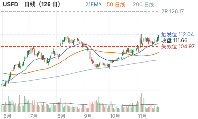
| 状态 | 待升穿：前一日收盘 111.66，距技术触发位 -0.2%。闸门未开：只列作观察 |
| 技术触发位（Pivot） | 112.04（pivot 111.93 之上 0.1%） |
| 规则追价上限 | 117.52（pivot 之上 5%），高于此价规则上不追 |
| 形态失效位 | 104.97（10 日低位），距入场价 6.3% |
| 试算仓位 | 26 股，约 $2,913（账户 2.9%）；到形态失效位约损失 $184。按试仓仓位试算 |
| 模型 2R 参考位 | 每股风险 112.04 − 104.97 = 7.06；2R = 112.04 + 2 × 7.06 = 126.17；3R = 133.23 |
| 事件与波动幅度 | 财报日 —；做空回补天数 5.1，突破时有回补买盘；ATR 2.5% |
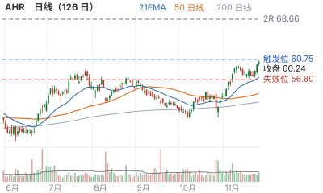
| 状态 | 待升穿：前一日收盘 60.24，距技术触发位 -0.7%。闸门未开：只列作观察 |
| 技术触发位（Pivot） | 60.75（pivot 60.69 之上 0.1%） |
| 规则追价上限 | 63.72（pivot 之上 5%），高于此价规则上不追 |
| 形态失效位 | 56.80（10 日低位），距入场价 6.5% |
| 试算仓位 | 47 股，约 $2,855（账户 2.9%）；到形态失效位约损失 $186。按试仓仓位试算 |
| 模型 2R 参考位 | 每股风险 60.75 − 56.80 = 3.95；2R = 60.75 + 2 × 3.95 = 68.66；3R = 72.61 |
| 事件与波动幅度 | 财报日 —；做空回补天数 10.2，突破时有回补买盘；ATR 2.2% |
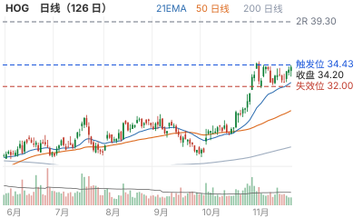
| 状态 | 待升穿：前一日收盘 34.20，距技术触发位 -0.6%。闸门未开：只列作观察 |
| 技术触发位（Pivot） | 34.43（pivot 34.40 之上 0.1%） |
| 规则追价上限 | 36.12（pivot 之上 5%），高于此价规则上不追 |
| 形态失效位 | 32.00（10 日低位），距入场价 7.1% |
| 试算仓位 | 76 股，约 $2,617（账户 2.6%）；到形态失效位约损失 $185。按试仓仓位试算 |
| 模型 2R 参考位 | 每股风险 34.43 − 32.00 = 2.44；2R = 34.43 + 2 × 2.44 = 39.30；3R = 41.74 |
| 事件与波动幅度 | 财报日 02-10；做空回补天数 7.8，突破时有回补买盘；ATR 3.3% |
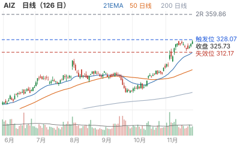
| 状态 | 待升穿：前一日收盘 325.73，距技术触发位 -0.6%。闸门未开：只列作观察 |
| 技术触发位（Pivot） | 328.07（pivot 327.74 之上 0.1%） |
| 规则追价上限 | 344.13（pivot 之上 5%），高于此价规则上不追 |
| 形态失效位 | 312.17（10 日低位），距入场价 4.8% |
| 试算仓位 | 11 股，约 $3,609（账户 3.6%）；到形态失效位约损失 $175。按试仓仓位试算 |
| 模型 2R 参考位 | 每股风险 328.07 − 312.17 = 15.90；2R = 328.07 + 2 × 15.90 = 359.86；3R = 375.76 |
| 事件与波动幅度 | 财报日 02-09；做空回补天数 3.3；ATR 1.8% |
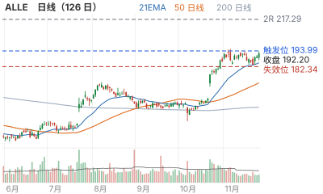
| 状态 | 待升穿：前一日收盘 192.20，距技术触发位 -0.8%。闸门未开：只列作观察 |
| 技术触发位（Pivot） | 193.99（pivot 193.80 之上 0.1%） |
| 规则追价上限 | 203.49（pivot 之上 5%），高于此价规则上不追 |
| 形态失效位 | 182.34（10 日低位），距入场价 6.0% |
| 试算仓位 | 16 股，约 $3,104（账户 3.1%）；到形态失效位约损失 $186。按试仓仓位试算 |
| 模型 2R 参考位 | 每股风险 193.99 − 182.34 = 11.65；2R = 193.99 + 2 × 11.65 = 217.29；3R = 228.94 |
| 事件与波动幅度 | 财报日 02-16；做空回补天数 2.4；ATR 2.3% |
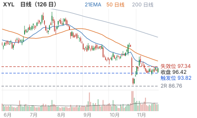
| 状态 | 待跌穿：前一日收盘 96.42，高于技术触发位 2.8% |
| 技术触发位（Pivot） | 93.82（3 日低位 93.91 之下 0.1%） |
| 规则追空下限 | 91.00（触发位之下 3%），低于此价规则上不追 |
| 形态失效位 | 97.34（3 日高位之上），距入场价 3.8% |
| 试算仓位 | 106 股，约 $9,945（账户 9.9%）；到形态失效位约损失 $374 |
| 模型 2R 参考位 | 每股风险 97.34 − 93.82 = 3.53；2R = 93.82 − 2 × 3.53 = 86.76；3R = 83.23 |
| 事件与波动幅度 | 财报日 —；做空回补天数 2.9；ATR 2.5% |
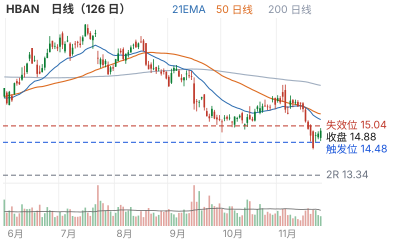
| 状态 | 待跌穿：前一日收盘 14.88，高于技术触发位 2.8% |
| 技术触发位（Pivot） | 14.48（3 日低位 14.49 之下 0.1%） |
| 规则追空下限 | 14.04（触发位之下 3%），低于此价规则上不追 |
| 形态失效位 | 15.04（3 日高位之上），距入场价 3.9% |
| 试算仓位 | 658 股，约 $9,525（账户 9.5%）；到形态失效位约损失 $375 |
| 模型 2R 参考位 | 每股风险 15.04 − 14.48 = 0.57；2R = 14.48 − 2 × 0.57 = 13.34；3R = 12.77 |
| 事件与波动幅度 | 财报日 —；做空回补天数 3.1；ATR 2.7% |
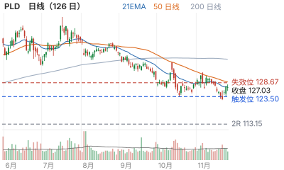
| 状态 | 待跌穿：前一日收盘 127.03，高于技术触发位 2.9% |
| 技术触发位（Pivot） | 123.50（3 日低位 123.62 之下 0.1%） |
| 规则追空下限 | 119.79（触发位之下 3%），低于此价规则上不追 |
| 形态失效位 | 128.67（3 日高位之上），距入场价 4.2% |
| 试算仓位 | 72 股，约 $8,892（账户 8.9%）；到形态失效位约损失 $373 |
| 模型 2R 参考位 | 每股风险 128.67 − 123.50 = 5.17；2R = 123.50 − 2 × 5.17 = 113.15；3R = 107.98 |
| 事件与波动幅度 | 财报日 —；做空回补天数 4.6；ATR 2.0% |
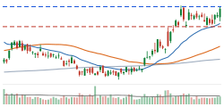
触发位 87.55（-0.7%）・失效位 81.73尚欠：预备名额已满（5 只），排序在后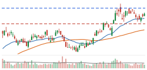
触发位 252.75（-1.9%）・失效位 238.81尚欠：预备名额已满（5 只），排序在后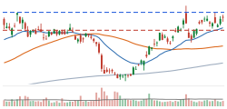
触发位 275.71（-1.6%）・失效位 261.09尚欠：预备名额已满（5 只），排序在后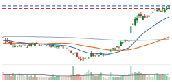
触发位 211.06（+0.6%）・失效位 207.36尚欠：预备名额已满（5 只），排序在后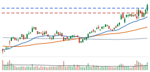
触发位 123.49（+1.7%）・失效位 120.37尚欠：预备名额已满（5 只），排序在后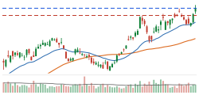
触发位 316.46（+0.1%）・失效位 309.44尚欠：预备名额已满（5 只），排序在后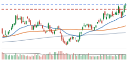
触发位 240.98（+0.1%）・失效位 235.63尚欠：预备名额已满（5 只），排序在后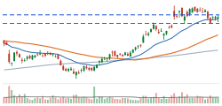
触发位 419.04（-0.8%）・失效位 405.98尚欠：预备名额已满（5 只），排序在后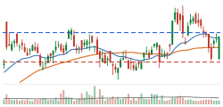
触发位 56.52（-0.7%）・失效位 53.65尚欠：预备名额已满（5 只），排序在后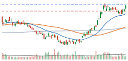
触发位 161.93（-0.3%）・失效位 157.07尚欠：只在抗跌强势名单，未有收缩或突破形态| 代码 | 方向 | 价位 | 原因 |
|---|---|---|---|
| QQQ | 升穿 | 666.84 | 试仓闸门的价格条件（另需分数 ≥ 40，现 29） |
| QQQ | 升穿 | 683.50 | 长线分界；重上之前，反弹先当阻力看 |
| QQQ | 升穿 | 707.05 | 多头闸门的价格条件（另需 Regime A 或 B） |
| QQQ | 跌穿 | 606.23 | 反弹尝试作废，重新计日 |
| USFD | 升穿 | 112.04 | 预备｜收窄＋抗跌强势 技术触发位；失效位 104.97 |
| AHR | 升穿 | 60.75 | 预备｜收窄＋抗跌强势 技术触发位；失效位 56.80 |
| HOG | 升穿 | 34.43 | 预备｜收窄＋抗跌强势 技术触发位；失效位 32.00 |
| AIZ | 升穿 | 328.07 | 预备｜收窄 技术触发位；失效位 312.17 |
| ALLE | 升穿 | 193.99 | 预备｜收窄＋抗跌强势 技术触发位；失效位 182.34 |
| XYL | 跌穿 | 93.82 | 做空 A 级｜跌穿 3 日低位；失效位 97.34 |
| HBAN | 跌穿 | 14.48 | 做空 A 级｜跌穿 3 日低位；失效位 15.04 |
| PLD | 跌穿 | 123.50 | 做空 A 级｜跌穿 3 日低位；失效位 128.67 |
| MAS | 升穿 | 87.55 | B 级｜收窄＋抗跌强势；尚欠：预备名额已满（5 只），排序在后 |
| THG | 升穿 | 252.75 | B 级｜收窄＋回调；尚欠：预备名额已满（5 只），排序在后 |
| ALL | 升穿 | 275.71 | B 级｜收窄；尚欠：预备名额已满（5 只），排序在后 |
| MAR | 升穿 | 419.04 | B 级｜回调；尚欠：预备名额已满（5 只），排序在后 |
| CNO | 升穿 | 56.52 | B 级｜回调＋抗跌强势；尚欠：预备名额已满（5 只），排序在后 |
| EXR | 升穿 | 161.93 | B 级｜抗跌强势；尚欠：只在抗跌强势名单，未有收缩或突破形态 |
| 组别 | 总数 | 触发比率 | 达 2R 比率 | 平均 R |
|---|---|---|---|---|
| 首选：闸门开（A 级） | 累积样本中（3 笔） | |||
| 首选：闸门关（预备） | 累积样本中（5 笔） | |||
| 首选合计 | 累积样本中（8 笔） | |||
| 其余候选（对照组） | 140 | — | — | — |
| 代码 | 方向 | 列出日 | 状态 | 已过交易日 | R（假设） | 触发位 | 失效位 |
|---|---|---|---|---|---|---|---|
| XYL | 做空 | 11-27 | 待触发 | 0 | — | 93.82 | 97.34 |
| USFD | 做多（预备） | 11-27 | 待触发 | 0 | — | 112.04 | 104.97 |
| PLD | 做空 | 11-27 | 待触发 | 0 | — | 123.50 | 128.67 |
| HOG | 做多（预备） | 11-27 | 待触发 | 0 | — | 34.43 | 32.00 |
| HBAN | 做空 | 11-27 | 待触发 | 0 | — | 14.48 | 15.04 |
| ALLE | 做多（预备） | 11-27 | 待触发 | 0 | — | 193.99 | 182.34 |
| AIZ | 做多（预备） | 11-27 | 待触发 | 0 | — | 328.07 | 312.17 |
| AHR | 做多（预备） | 11-27 | 待触发 | 0 | — | 60.75 | 56.80 |
市场健康分数（0–100）由五组指标加权计算：QQQ 趋势、市场宽度、风险胃纳、波动和利率；分数决定 A 至 E 级市况；多头、试仓和空头闸门按级别、分数、QQQ 相对均线的位置和超卖状态开关。这是每日整理市况和筛选技术形态的工作流程，不是买卖信号。
分数区间：E 低于 25，D 25–39，C 40–54，B 55–69，A 70 或以上。级别降级即日生效；升级要连续两个交易日留在较高区间，所以分数有时会高于级别所属的区间。
A 级条件：形态完成、现价在触发价之下 3% 以内（或已升穿但仍在买入区）、5 个交易日内没有财报、形态低位距入场价不超过 8%、同板块最多 2 只、闸门容许；另外要在 Stage 2，八项清单最多 2 项不通过。B 级是欠一至两项而且距触发价不超过 8% 的。排序按清单通过的项数、形态、RS。清单：趋势 = Stage 2；RS ≥ 80；板块 = 1 个月回报排前 4；收缩 = VCP，或 10 日波动幅度在半年内最窄的 35%；成交 = 未突破的看量缩（10 日均量低于 50 日均量的 85%），刚突破的看突破日放量；资金 = U/D 量比 ≥ 1.2；“–”是没有数据。门槛是经验值；A 级是规则排序，不是买入信号。
判定方法见上面“之前名单的跟进”：每个列出的形态按之后的日线自动判定，逐日累积成绩。
| 关键位 | 价位 | 距参考价 |
|---|---|---|
| 52 周高位 | 762.86 | +19.0% |
| 20 日高位 | 718.07 | +12.1% |
| 50 日线 | 707.05 | +10.3% |
| 200 日线 | 683.50 | +6.7% |
| 21EMA | 666.84 | +4.1% |
| 前一日高位 | 634.89 | -0.9% |
| 前一日收盘 | 633.93 | -1.1% |
| 前一日低位 | 607.74 | -5.2% |
| 20 日低位 | 606.23 | -5.4% |
| 调整低位 | 606.23 | -5.4% |
| 支柱 | 权重 | 分数 | 现在 | 5 日变化 |
|---|---|---|---|---|
| 趋势 | 30% | 17 | +0 | |
| 宽度 | 25% | 55 | +9 | |
| 风险偏好 | 20% | 25 | +0 | |
| 波动率 | 15% | 0 | -12 | |
| 利率与信贷 | 10% | 50 | +17 |
| ETF | 指数 | 收盘 | 1 日 | 5 日 | > 21EMA | > 50 日线 | > 200 日线 | 距 52 周高 | 派发日 |
|---|---|---|---|---|---|---|---|---|---|
| QQQ | Nasdaq 100 | 633.93 | -0.7% | -3.9% | – | – | – | -16.9% | 8 |
| SPY | S&P 500 | 716.70 | -0.3% | -1.8% | – | – | – | -8.3% | 10 |
| DIA | 道指 | 501.27 | +0.3% | -0.1% | – | – | – | -8.3% | 9 |
| IWM | Russell 2000 | 268.87 | +0.6% | -0.5% | – | – | – | -11.9% | 7 |
| RSP | S&P 500 等权 | 215.74 | +0.8% | +0.1% | – | ✓ | ✓ | -3.8% | 7 |
| SMH | 半导体 | 422.46 | -1.0% | -8.1% | – | – | – | -37.1% | 5 |
| 范围 | 只数 | > 50 日线 | > 200 日线 | Stage 2 | 52 周高突破 | 52 周低跌破 |
|---|---|---|---|---|---|---|
| Nasdaq 100 | 100 | 43% | 42% | 24% | 1 | 0 |
| S&P 500 | 501 | 59% | 54% | 33% | 6 | 0 |
| S&P 400 中型股 | 399 | 54% | 48% | 25% | 7 | 0 |
| 全部股票池 | 915 | 56% | 51% | 29% | 13 | 0 |
| 日期 | 当日跌幅 | 尚余交易日 | QQQ 收高于此即失效 |
|---|---|---|---|
| 10-22 | -2.9% | 1 | 739.69 |
| 10-29 | -1.4% | 6 | 751.11 |
| 10-30 | -3.5% | 7 | 725.01 |
| 11-13 | -1.2% | 17 | 713.88 |
| 11-16 | -2.7% | 18 | 694.84 |
| 11-17 | -0.7% | 19 | 689.80 |
| 11-19 | -2.2% | 21 | 677.29 |
| 11-25 | -0.7% | 25 | 665.63 |
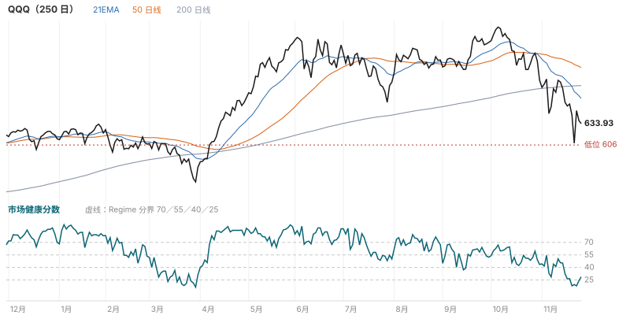
| 支柱 | 检查项目 | 现况 | 得分 | |
|---|---|---|---|---|
| 趋势 | ✗ | 收盘 > 21EMA | 633.93 vs 666.84 | 0 / 1 |
| 趋势 | ✗ | 收盘 > 50 日线 | 633.93 vs 707.05 | 0 / 1 |
| 趋势 | ✗ | 收盘 > 200 日线 | 633.93 vs 683.50 | 0 / 1 |
| 趋势 | ✗ | 21EMA > 50 日线 | — | 0 / 1 |
| 趋势 | ✓ | 50 日线 > 200 日线 | — | 1 / 1 |
| 趋势 | ✗ | 50 日线高于 10 日前 | — | 0 / 1 |
| 趋势 | ✓ | 200 日线高于 20 日前 | — | 1 / 1 |
| 趋势 | ✗ | 距 52 周高位 5% 以内 | -16.9% | 0 / 1 |
| 趋势 | ✗ | 20 日高位高于前一个 20 日 | — | 0 / 1 |
| 趋势 | ✗ | 20 日低位高于前一个 20 日 | — | 0 / 1 |
| 趋势 | ✗ | 近 25 日派发日数目 | 8 个 | 0 / 1 |
| 趋势 | ✗ | SPY > 50 日线 | — | 0 / 0.5 |
| 趋势 | ✗ | IWM > 50 日线 | — | 0 / 0.5 |
| 宽度 | ◐ | 高于 50 日线的股票比例 | 56% | 2 / 3 |
| 宽度 | ◐ | 高于 200 日线的股票比例 | 51% | 2 / 3 |
| 宽度 | ✓ | 高于 20 日线的比例高于 5 日前 | 45%（5 日前 40%） | 1 / 1 |
| 宽度 | ✗ | 52 周新高数 > 新低数 | 30 vs 36 | 0 / 1 |
| 宽度 | ✗ | （新高 − 新低）10 日平均 > 0 | -8.8 | 0 / 1 |
| 宽度 | ✓ | McClellan Oscillator > 0 | 8.5 | 1 / 1 |
| 宽度 | ✗ | 腾落线 > 其 20 日均线 | — | 0 / 1 |
| 风险偏好 | ✗ | SMH/QQQ > 50 日均线 | 之下 | 0 / 1 |
| 风险偏好 | ✓ | RSP/SPY > 50 日均线 | 之上 | 1 / 1 |
| 风险偏好 | ✓ | IWM/SPY > 50 日均线 | 之上 | 1 / 1 |
| 风险偏好 | ✗ | XLY/XLP > 50 日均线 | 之下 | 0 / 1 |
| 风险偏好 | ✗ | SPHB/SPLV > 50 日均线 | 之下 | 0 / 1 |
| 风险偏好 | ✗ | 龙头股高于 50 日线的比例 | 10% | 0 / 2 |
| 风险偏好 | ✗ | 最强三个板块中防守板块 ≤ 1 个 | XLP、XLRE、XLV | 0 / 1 |
| 波动率 | ✗ | VIX 水平 | 28.3 | 0 / 3 |
| 波动率 | ✗ | VIX < 其 20 日均线 | 20 日均 23.1 | 0 / 1 |
| 波动率 | ✗ | VIX/VIX3M 期限结构 | 1.08 | 0 / 2 |
| 波动率 | ✗ | VXN < 其 20 日均线 | VXN 38.5 | 0 / 1 |
| 波动率 | ✗ | VXN − VIX 差距 ≤ 一年中位数 | 10.2（中位 5.9） | 0 / 1 |
| 利率与信贷 | ✓ | 10 年期收益率 20 日变动 | 4.85%（-20bp） | 2 / 2 |
| 利率与信贷 | ✗ | HYG/IEF > 50 日均线 | 之下 | 0 / 2 |
| 利率与信贷 | ✗ | HYG > 50 日线 | 之下 | 0 / 1 |
| 利率与信贷 | ✓ | 美元指数 20 日升幅 < 2% | +1.4% | 1 / 1 |
| 项目 | 最新 | 自美股收盘以来 | 报价时间（美东） |
|---|---|---|---|
| Nasdaq 100 期货 | 26,389.75 | +1.09% | 11-25 23:45 |
| S&P 500 期货 | 7,247.75 | +0.71% | 11-25 23:45 |
| Russell 2000 期货 | 2,721.70 | +0.59% | 11-25 23:45 |
| VIX | 28.29 | — | 收盘后未有新报价 |
| 10 年期收益率 | 4.85 | — | 收盘后未有新报价 |
| 美元指数 | 103.81 | +0.11% | 11-25 23:45 |
| 原油 | 84.42 | +0.34% | 11-25 23:45 |
| 黄金 | 3,620.40 | +0.49% | 11-25 23:45 |
| Bitcoin | 60,404.78 | +0.38% | 11-26 02:00 |
| 代码 | 公司 | 公布 | 盈利惊喜 | 股价反应 | 反应来源 | 成交倍数 | RS | 阶段 | 判读 |
|---|---|---|---|---|---|---|---|---|---|
| DE | Deere & Company | 11-25 时间不明 | -4.4% | +4.4% | 数据日全日 | 1.91 | 71 | 3 转弱 | 逊预期但升：强 |
| DELL | Dell Technologies Inc. | 11-24 收盘后 | +43.5% | +0.6% | 数据日全日 | 3.29 | 31 | 3 转弱 | 反应平淡 |
| ADSK | Autodesk, Inc. | 11-24 收盘后 | +4.3% | -3.5% | 数据日全日 | 1.69 | 39 | 2 上升 | 胜预期但跌：弱 |
| WDAY | Workday, Inc. | 11-24 收盘后 | +2.8% | +0.7% | 数据日全日 | 1.79 | 48 | 3 转弱 | 反应平淡 |
| HPQ | HP Inc. | 11-24 收盘后 | +12.0% | +11.5% | 数据日全日 | 2.86 | 75 | 2 上升 | 胜预期，升 |
| NTNX | Nutanix, Inc. | 11-24 收盘后 | +20.6% | -15.2% | 数据日全日 | 5.36 | 13 | 3 转弱 | 胜预期但跌：弱 |
| 代码 | 财报日 | 时段 | 距今交易日 | 持仓 |
|---|---|---|---|---|
| OKTA | 12-01 | 收盘后 | 2 | – |
| DRI | 12-18 | 开盘前 | 15 | – |
| 代码 | 用途 | 期权到期 | 日数 | 计算用股价 | 行使价 | 跨式成本 | 下方盈亏平衡 | 上方盈亏平衡 |
|---|---|---|---|---|---|---|---|---|
| QQQ | 大盘：最近到期 | 11-27 | 2 | 633.93 | 634.00 | 2.1% | 620.67 | 647.33 |
| OKTA | 财报 12-01 收盘后 | 12-04 | 9 | 201.77 | 202.50 | 16.2% | 169.90 | 235.10 |
| 期限 | 代码 | 水平 |
|---|---|---|
| 1 日 | VIX1D | 39.36 |
| 9 日 | VIX9D | 29.61 |
| 30 日（VIX） | VIX | 28.29 |
| 3 个月 | VIX3M | 26.29 |
| 6 个月 | VIX6M | 26.89 |
| VIX 本身的波动（VVIX） | VVIX | 115.38 |
| 尾部风险（SKEW） | SKEW | 142.06 |
| 代码 | 公司 | 榜 | 最新价 | 相对前一日收盘 | RS | 阶段 | 在股票池 | 在名单／持仓 | 财报日 |
|---|---|---|---|---|---|---|---|---|---|
| WLDSW | Wearable Devices Ltd. | 升幅榜 | 71.18 | +73.6% | — | — | – | – | — |
| RIBBU | Ribbon Acquisition Corp Un | 升幅榜 | 95.17 | +68.9% | — | — | – | – | — |
| FCUV | Focus Universal Inc. | 升幅榜 | 5.65 | +53.1% | — | — | – | – | — |
| 代码 | 来自 | 结算日 | 做空股数（百万） | 较上期 | 回补天数 | 判读 |
|---|---|---|---|---|---|---|
| FFIN | 做空焦点 | 11-13 | 8.93 | +2.3% | 11.20 | 回补天数逾 5 日：逼空风险较高（空头风险提示） |
| AHR | 做多焦点 | 11-13 | 33.32 | -1.1% | 10.20 | 做空盘多：突破时有回补买盘 |
| CDP | 做空焦点 | 11-13 | 10.93 | +2.4% | 9.85 | 回补天数逾 5 日：逼空风险较高（空头风险提示） |
| DRI | 做多焦点 | 11-13 | 7.48 | +1.1% | 8.02 | 做空盘多：突破时有回补买盘 |
| HOG | 做多焦点 | 11-13 | 18.54 | -6.2% | 7.78 | 做空盘多：突破时有回补买盘 |
| LIVN | 做多焦点 | 11-13 | 6.37 | +0.1% | 6.33 | 做空盘多：突破时有回补买盘 |
| USFD | 做多焦点 | 11-13 | 15.31 | +1.3% | 5.12 | 做空盘多：突破时有回补买盘 |
| ADP | 做多焦点 | 11-13 | 10.43 | +9.5% | 4.64 | 做空盘偏多 |
| PLD | 做空焦点 | 11-13 | 17.36 | +2.8% | 4.59 | 做空盘偏多 |
| ALL | 做多焦点 | 11-13 | 7.44 | +13.2% | 4.28 | 做空盘偏多 |
| LII | 做空焦点 | 11-13 | 2.41 | -11.2% | 3.85 | 做空盘偏多 |
| CAH | 做多焦点 | 11-13 | 6.69 | -11.7% | 3.82 | 做空盘偏多 |
| MAS | 做多焦点 | 11-13 | 8.53 | +8.1% | 3.81 | 做空盘偏多 |
| MAR | 做多焦点 | 11-13 | 6.78 | +6.8% | 3.71 | 做空盘偏多 |
| CNO | 做多焦点 | 11-13 | 2.79 | +8.8% | 3.69 | 做空盘偏多 |
| FCN | 做多焦点 | 11-13 | 1.80 | -31.5% | 3.52 | 做空盘偏多 |
| AIZ | 做多焦点 | 11-13 | 1.57 | -4.9% | 3.28 | 做空盘偏多 |
| FICO | 做空焦点 | 11-13 | 2.40 | -5.4% | 3.24 | 做空盘偏多 |
| HBAN | 做空焦点 | 11-13 | 52.42 | -10.5% | 3.08 | 做空盘偏多 |
| THG | 做多焦点 | 11-13 | 0.93 | -0.7% | 3.01 | 做空盘偏多 |
| GGG | 做空焦点 | 11-13 | 5.20 | -10.9% | 2.92 | 做空盘不多 |
| SBAC | 做空焦点 | 11-13 | 3.29 | -2.5% | 2.91 | 做空盘不多 |
| XYL | 做空焦点 | 11-13 | 8.60 | -0.7% | 2.87 | 做空盘不多 |
| EXR | 做多焦点 | 11-13 | 4.08 | -16.3% | 2.66 | 做空盘不多 |
| FHN | 做空焦点 | 11-13 | 15.09 | +6.5% | 2.62 | 做空盘不多 |
| DIS | 做多焦点 | 11-13 | 21.78 | +3.1% | 2.50 | 做空盘不多 |
| AKAM | 做空焦点 | 11-13 | 22.09 | +15.2% | 2.45 | 做空盘不多 |
| ALLE | 做多焦点 | 11-13 | 2.30 | -7.7% | 2.38 | 做空盘不多 |
| SFM | 回抽阻力 | 11-13 | 9.36 | -14.2% | 2.23 | 做空盘不多 |
| BROS | 回抽阻力 | 11-13 | 15.10 | -11.0% | 2.16 | 做空盘不多 |
| ALNY | 回抽阻力 | 11-13 | 5.59 | +2.2% | 1.65 | 做空盘不多 |
| EW | 做多焦点 | 11-13 | 9.92 | +5.7% | 1.56 | 做空盘不多 |
| 排名 | 5 日排名变化 | ETF | 板块 | 1 个月 | 3 个月 | 1 个月超额 | > 50 日线 | 距 52 周高 | 成分股 > 50 日线 | 52 周新高 | 52 周新低 |
|---|---|---|---|---|---|---|---|---|---|---|---|
| 1 | ↑1 | XLP | 必需消费 | +5.9% | +9.2% | +12.8% | ✓ | -1.3% | 79% | 0 | 0 |
| 2 | ↑2 | XLRE | 房地产 | +3.3% | -1.0% | +10.2% | ✓ | -5.6% | 83% | 1 | 0 |
| 3 | ↑3 | XLV | 医疗 | +2.5% | +7.5% | +9.4% | ✓ | -4.5% | 71% | 1 | 0 |
| 4 | ↓3 | XLU | 公用 | +1.8% | +1.7% | +8.7% | ✓ | -8.8% | 84% | 0 | 0 |
| 5 | ↓2 | XLY | 非必需消费 | +1.8% | +1.6% | +8.6% | ✓ | -6.0% | 73% | 3 | 0 |
| 6 | ↑3 | XLC | 通讯 | +1.7% | -5.1% | +8.6% | – | -12.5% | 61% | 2 | 0 |
| 7 | ↓2 | XLF | 金融 | +1.1% | -2.0% | +8.0% | ✓ | -5.9% | 56% | 3 | 0 |
| 8 | — | XLB | 原材料 | -1.1% | -3.4% | +5.8% | ✓ | -6.3% | 50% | 0 | 0 |
| 9 | ↓2 | XLI | 工业 | -3.0% | -8.6% | +3.9% | – | -13.4% | 55% | 3 | 0 |
| 10 | — | XLE | 能源 | -10.7% | -1.7% | -3.8% | – | -13.2% | 11% | 0 | 0 |
| 11 | — | XLK | 科技 | -17.8% | -17.3% | -10.9% | – | -23.4% | 21% | 0 | 0 |
| 行业组别（GICS） | 只数 | 1 个月中位 | 3 个月中位 | > 50 日线 | RS 中位 | 新高 | RS 最高的三只 |
|---|---|---|---|---|---|---|---|
| Apparel, Accessories & Luxury Goods | 7 | +13.2% | +13.9% | 100% | 74 | 1 | COLM、VFC、PVH |
| Health Care Distributors | 4 | +10.1% | +15.3% | 100% | 86 | 0 | CAH、MCK、COR |
| Insurance Brokers | 7 | +13.6% | +9.9% | 100% | 86 | 2 | AJG、MRSH、RYAN |
| Industrial Conglomerates | 4 | +11.1% | +8.4% | 100% | 84 | 0 | CSL、DD、MMM |
| Data Processing & Outsourced Services | 4 | +7.9% | +10.3% | 100% | 77 | 1 | EXLS、G、BR |
| Health Care Facilities | 6 | +7.4% | +12.8% | 100% | 81 | 0 | EHC、THC、OPCH |
| Consumer Staples Merchandise Retail | 6 | +10.2% | +14.3% | 83% | 90 | 0 | DLTR、TGT、WMT |
| Household Products | 4 | +8.0% | +8.3% | 100% | 77 | 0 | CHD、CL、CLX |
| 行业组别（GICS） | 只数 | 1 个月中位 | 3 个月中位 | > 50 日线 | RS 中位 | 新高 | RS 最高的三只 |
|---|---|---|---|---|---|---|---|
| Semiconductor Materials & Equipment | 10 | -17.5% | -33.3% | 0% | 11 | 0 | ENTG、Q、KLAC |
| Electronic Manufacturing Services | 7 | -18.5% | -31.9% | 0% | 6 | 0 | TEL、FLEX、JBL |
| Communications Equipment | 8 | -20.4% | -23.3% | 12% | 20 | 0 | MSI、ANET、CSCO |
| Semiconductors | 26 | -20.0% | -18.7% | 12% | 24 | 0 | SWKS、SYNA、SLAB |
| Agricultural Products & Services | 4 | -12.8% | -18.2% | 0% | 18 | 0 | DAR、ADM、INGR |
| Technology Hardware, Storage & Peripherals | 9 | -29.3% | -25.0% | 22% | 43 | 0 | AAPL、HPQ、P |
| Oil & Gas Equipment & Services | 6 | -15.2% | -16.8% | 0% | 16 | 0 | SLB、HAL、FTI |
| Electrical Components & Equipment | 14 | -12.8% | -17.7% | 14% | 16 | 0 | WWD、EMR、AYI |
| ETF | 行业 | 1 个月 | 3 个月 | 1 个月超额 | > 50 日线 | 距 52 周高 |
|---|---|---|---|---|---|---|
| ITB | 建筑 | +8.8% | +3.7% | +15.7% | ✓ | -14.7% |
| XRT | 零售 | +2.7% | +3.8% | +9.6% | ✓ | -5.6% |
| XBI | 生物科技 | +1.1% | -6.9% | +8.0% | ✓ | -7.8% |
| ITA | 国防航天 | +0.0% | -11.8% | +6.9% | – | -19.6% |
| KRE | 地区银行 | -3.8% | -5.5% | +3.1% | – | -10.9% |
| GDX | 金矿 | -11.2% | -28.7% | -4.3% | – | -36.9% |
| IGV | 软件 | -15.0% | -13.9% | -8.1% | – | -16.4% |
| XME | 金属矿业 | -15.5% | -30.9% | -8.7% | – | -37.4% |
| ARKK | 投机成长 | -20.5% | -22.9% | -13.7% | – | -29.0% |
| SMH | 半导体 | -24.3% | -26.3% | -17.4% | – | -37.1% |
| 代码 | 板块 | 阶段 | RS | 12 个月 RS（旧） | 1 个月 RS | 收盘 | 升跌 | 成交倍数 | 距 52 周高 | 距 50 日线 | 财报日 |
|---|---|---|---|---|---|---|---|---|---|---|---|
| NVDA | XLK | 3 转弱 | 5 | 7 | 4 | 149.30 | -3.9% | 1.84 | -38.7% | -26.7% | — |
| MU | XLK | 3 转弱 | 25 | 88 | 3 | 601.25 | -4.5% | 1.75 | -52.1% | -32.9% | 12-17 |
| AMD | XLK | 3 转弱 | 34 | 93 | 5 | 406.03 | -1.8% | 1.65 | -38.3% | -26.0% | 02-02 |
| SPCX | XLK | — | 16 | — | 16 | 127.44 | +1.3% | 1.43 | — | -13.1% | 02-09 |
| AAPL | XLK | 2 上升 | 86 | 86 | 56 | 355.58 | +0.4% | 1.24 | -1.5% | +3.7% | 01-28 |
| META | XLC | 3 转弱 | 47 | 47 | 43 | 609.89 | +3.4% | 0.86 | -21.8% | -9.3% | 01-27 |
| TSLA | XLY | 1 筑底 | 37 | 37 | 29 | 380.14 | -1.2% | 0.95 | -23.8% | +0.8% | 01-27 |
| MSFT | XLK | 3 转弱 | 53 | 62 | 26 | 489.93 | -1.2% | 1.06 | -12.4% | -5.7% | 01-27 |
| AMZN | XLY | 3 转弱 | 41 | 49 | 37 | 244.43 | -3.1% | 1.43 | -14.9% | -4.2% | 02-04 |
| INTC | XLK | 3 转弱 | 18 | 18 | 2 | 54.47 | -0.6% | 1.01 | -61.7% | -37.9% | 01-28 |
| GOOGL | XLC | 4 下跌 | 10 | 12 | 15 | 273.10 | -2.1% | 1.22 | -33.2% | -14.2% | 02-03 |
| AVGO | XLK | 4 下跌 | 11 | 13 | 20 | 300.86 | -0.1% | 1.30 | -39.2% | -11.7% | 12-09 |
| MRVL | XLK | 3 转弱 | 23 | 42 | 1 | 130.93 | -0.5% | 1.12 | -60.3% | -39.1% | 12-01 ⚠2日 |
| ORCL | XLK | 4 下跌 | 3 | 4 | 9 | 103.88 | -5.1% | 1.10 | -58.5% | -20.2% | 12-14 |
| LITE | XLK | 4 下跌 | 10 | 9 | 2 | 476.58 | -2.2% | 0.97 | -58.3% | -40.7% | 02-02 |
| PLTR | XLK | 3 转弱 | 37 | 52 | 12 | 163.59 | +1.5% | 0.89 | -23.2% | -10.4% | 02-01 |
| NBIS | XLK | 4 下跌 | 3 | 3 | 1 | 84.99 | -2.7% | 1.60 | -71.7% | -51.2% | 02-11 |
| BE | XLI | 3 转弱 | 14 | 21 | 4 | 152.89 | -2.3% | 1.07 | -56.5% | -32.9% | 02-04 |
| CRWV | XLK | 4 下跌 | 1 | 1 | 5 | 42.57 | -0.1% | 1.41 | -69.2% | -35.2% | — |
| DELL | XLK | 3 转弱 | 31 | 97 | 2 | 297.06 | +0.6% | 3.29 | -50.1% | -35.0% | 02-25 |
| 代码 | RS（v3） | 12 个月 RS（旧） | 1 个月 | 3 个月 | 6 个月 | 9 个月 | 12 个月 | 距 52 周高 |
|---|---|---|---|---|---|---|---|---|
| NVDA | 5 | 7 | -31.5% | -34.5% | -30.3% | -19.2% | -18.2% | -38.7% |
| MU | 25 | 88 | -35.3% | -35.7% | -34.9% | +44.7% | +168.5% | -52.1% |
| AMD | 34 | 93 | -27.5% | -14.8% | -21.6% | +99.3% | +88.8% | -38.3% |
| SPCX | 16 | — | -14.2% | -9.5% | — | — | — | — |
| AAPL | 86 | 86 | +2.4% | +13.0% | +13.8% | +30.3% | +28.9% | -1.5% |
| META | 47 | 47 | -1.7% | +6.8% | -4.0% | -7.2% | -0.5% | -21.8% |
| TSLA | 37 | 37 | -6.7% | +7.1% | -14.0% | -7.0% | -9.0% | -23.8% |
| MSFT | 53 | 62 | -7.8% | -3.0% | +14.7% | +22.0% | +3.4% | -12.4% |
| AMZN | 41 | 49 | -3.4% | -4.6% | -10.8% | +17.6% | +8.0% | -14.9% |
| INTC | 18 | 18 | -41.9% | -40.9% | -54.9% | +19.8% | +52.2% | -61.7% |
| GOOGL | 10 | 12 | -14.8% | -19.8% | -30.0% | -11.2% | -14.3% | -33.2% |
| AVGO | 11 | 13 | -12.1% | -19.0% | -29.5% | -6.5% | -20.4% | -39.2% |
| MRVL | 23 | 42 | -46.2% | -45.8% | -36.1% | +65.1% | +56.3% | -60.3% |
| ORCL | 3 | 4 | -20.4% | -31.6% | -49.0% | -30.9% | -48.1% | -58.5% |
| LITE | 10 | 9 | -45.0% | -50.2% | -44.6% | -29.6% | +59.2% | -58.3% |
| PLTR | 37 | 52 | -17.7% | -12.0% | +14.1% | +20.3% | +0.8% | -23.2% |
| NBIS | 3 | 3 | -50.1% | -61.1% | -62.5% | -19.0% | -7.5% | -71.7% |
| BE | 14 | 21 | -30.0% | -29.8% | -47.3% | -9.3% | +60.0% | -56.5% |
| CRWV | 1 | 1 | -28.5% | -51.0% | -60.2% | -56.4% | -42.2% | -69.2% |
| DELL | 31 | 97 | -40.8% | -37.1% | -6.3% | +144.6% | +133.5% | -50.1% |
| 代码 | 板块 | 板块排名 | RS | 收盘 | Pivot | 距 Pivot | 收缩 | 量缩比 | 底部日数 | 形态失效位 | 风险 | 股数 | 仓位 | U/D 量比 | 财报日 |
|---|---|---|---|---|---|---|---|---|---|---|---|---|---|---|---|
| GKOS | XLV | 3 | 99 | 259.90 | 250.61 | +3.7% | 2T 14→8% | 0.62 | 15 | 230.79 | 8.0% | 9 | 2.3% | 0.93 | 02-16 |
| CART | XLP | 1 | 91 | 57.68 | 59.76 | -3.5% | 2T 9→5% | 0.61 | 22 | 56.60 | 5.4% | 58 | 3.5% | 1.24 | 02-04 |
| AVNT | XLB | 8 | 85 | 45.41 | 47.04 | -3.5% | 2T 10→9% | 0.76 | 15 | 43.32 | 8.0% | 49 | 2.3% | 0.93 | 02-18 |
| 代码 | 板块 | 板块排名 | RS | 收盘 | 10 日波动幅度 | 收窄百分位 | 量缩比 | Pivot（10 日高） | 距 Pivot | 距 52 周高 | U/D 量比 | 财报日 |
|---|---|---|---|---|---|---|---|---|---|---|---|---|
| HOG | XLY | 5 | 99 | 34.20 | 6.5% | 6% | 0.84 | 34.40 | -0.6% | -1.8% | 1.55 | 02-10 |
| MAS | XLI | 9 | 97 | 86.93 | 6.1% | 23% | 0.82 | 87.46 | -0.6% | -1.1% | 0.96 | 02-09 |
| AIZ | XLF | 7 | 97 | 325.73 | 4.3% | 17% | 0.84 | 327.74 | -0.6% | -0.6% | 1.49 | 02-09 |
| MANH | XLK | 11 | 97 | 251.97 | 6.9% | 10% | 0.80 | 260.00 | -3.1% | -4.4% | 1.42 | 02-02 |
| CDW | XLK | 11 | 96 | 174.97 | 9.9% | 12% | 0.83 | 175.61 | -0.4% | -0.4% | 0.96 | 02-03 |
| HAE | XLV | 3 | 94 | 120.44 | 7.3% | 21% | 0.77 | 126.09 | -4.5% | -8.8% | 1.05 | 02-04 |
| ALLE | XLI | 9 | 94 | 192.20 | 5.5% | 20% | 0.68 | 193.80 | -0.8% | -1.6% | 1.35 | 02-16 |
| PCTY | XLI | 9 | 94 | 179.33 | 8.4% | 17% | 0.85 | 185.93 | -3.5% | -3.5% | 1.23 | 02-04 |
| THG | XLF | 7 | 92 | 247.85 | 5.0% | 14% | 0.75 | 252.50 | -1.8% | -3.5% | 1.00 | 02-02 |
| MORN | XLF | 7 | 91 | 239.24 | 8.7% | 13% | 0.81 | 251.04 | -4.7% | -4.7% | 1.85 | 02-11 |
| USFD | XLP | 1 | 90 | 111.66 | 5.8% | 15% | 0.73 | 111.93 | -0.2% | -0.8% | 1.34 | — |
| AHR | XLRE | 2 | 89 | 60.24 | 6.0% | 14% | 0.80 | 60.69 | -0.7% | -0.7% | 1.31 | — |
| PTC | XLK | 11 | 89 | 196.00 | 1.2% | 13% | 0.59 | 197.08 | -0.5% | -0.5% | 2.14 | — |
| ALL | XLF | 7 | 88 | 271.39 | 4.8% | 2% | 0.76 | 275.43 | -1.5% | -3.5% | 0.84 | — |
| FDS | XLF | 7 | 87 | 324.55 | 9.7% | 7% | 0.60 | 338.99 | -4.3% | -6.7% | 1.59 | 12-17 |
| 代码 | 板块 | 板块排名 | RS | 收盘 | 升跌 | 成交倍数 | 量确认 | 突破位 | 高于突破位 | 历史新高 | 距 50 日线 | 财报日 |
|---|---|---|---|---|---|---|---|---|---|---|---|---|
| DIS | XLC | 6 | 94 | 125.60 | +2.5% | 1.76 | ✓ | 123.37 | +1.8% | – | +12.6% | 02-01 |
| WTW | XLF | 7 | 84 | 352.56 | +1.7% | 2.22 | ✓ | 351.51 | +0.3% | – | +11.7% | 02-04 |
| FCN | XLI | 9 | 98 | 212.29 | +2.5% | 0.62 | – | 210.85 | +0.7% | – | +28.5% | — |
| EXLS | XLI | 9 | 96 | 45.10 | +2.9% | 0.99 | – | 44.58 | +1.2% | – | +13.9% | 02-23 |
| RGA | XLF | 7 | 95 | 278.29 | +1.4% | 1.25 | – | 277.15 | +0.4% | ✓ | +6.6% | 02-11 |
| ADP | XLI | 9 | 94 | 316.72 | +1.9% | 1.02 | – | 316.14 | +0.2% | – | +10.3% | 01-27 |
| MRSH | XLF | 7 | 94 | 216.66 | +1.6% | 1.04 | – | 214.00 | +1.2% | – | +13.9% | 01-28 |
| DRI | XLY | 5 | 93 | 241.16 | +0.4% | 1.03 | – | 240.74 | +0.2% | ✓ | +11.7% | 12-18 |
| OMC | XLC | 6 | 84 | 90.70 | +1.6% | 0.62 | – | 89.57 | +1.3% | – | +11.9% | — |
| 代码 | 板块 | 板块排名 | RS | 收盘 | 距 52 周高 | 指数见顶以来 | RS 线新高 | 1 个月 RS | 距 50 日线 | 成交倍数 | U/D 量比 | 财报日 |
|---|---|---|---|---|---|---|---|---|---|---|---|---|
| CROX | XLY | 5 | 99 | 159.93 | -2.6% | +33.0% | ✓ | 98 | +18.4% | 0.57 | 1.74 | 02-11 |
| HOG | XLY | 5 | 99 | 34.20 | -1.8% | +26.9% | ✓ | 93 | +16.8% | 0.61 | 1.55 | 02-10 |
| SN | XLY | 5 | 99 | 232.50 | -1.2% | +25.9% | ✓ | 95 | +16.7% | 0.99 | 1.22 | 02-10 |
| REGN | XLV | 3 | 98 | 981.87 | -1.0% | +32.9% | ✓ | 96 | +16.7% | 0.98 | 1.17 | 01-28 |
| LIVN | XLV | 3 | 98 | 94.06 | -5.4% | +25.5% | ✓ | 94 | +14.1% | 0.65 | 1.24 | — |
| ANF | XLY | 5 | 98 | 176.96 | -0.8% | +25.2% | ✓ | 74 | +18.6% | 1.78 | 1.32 | 03-03 |
| BDX | XLV | 3 | 98 | 221.24 | -0.7% | +22.7% | ✓ | 89 | +12.6% | 0.70 | 1.08 | 02-09 |
| ROIV | XLV | 3 | 98 | 42.20 | -1.2% | +18.8% | ✓ | 92 | +13.3% | 0.63 | 1.09 | 02-04 |
| MAS | XLI | 9 | 97 | 86.93 | -1.1% | +24.3% | ✓ | 92 | +14.4% | 0.94 | 0.96 | 02-09 |
| MANH | XLK | 11 | 97 | 251.97 | -4.4% | +24.2% | ✓ | 76 | +9.3% | 1.36 | 1.42 | 02-02 |
| CAH | XLV | 3 | 97 | 282.91 | -1.2% | +21.2% | ✓ | 91 | +12.9% | 0.75 | 1.24 | — |
| CPAY | XLF | 7 | 97 | 454.33 | -5.3% | +11.7% | ✓ | 91 | +9.2% | 0.98 | 1.30 | — |
| CDW | XLK | 11 | 96 | 174.97 | -0.4% | +29.0% | ✓ | 78 | +13.9% | 1.00 | 0.96 | 02-03 |
| SIRI | XLC | 6 | 96 | 32.51 | -3.7% | +23.3% | ✓ | 96 | +13.4% | 0.74 | 1.36 | — |
| EW | XLV | 3 | 96 | 106.36 | -1.5% | +23.0% | ✓ | 94 | +13.9% | 0.76 | 1.63 | — |
| BBY | XLY | 5 | 96 | 102.58 | -4.0% | +20.9% | ✓ | 63 | +7.9% | 0.99 | 0.91 | — |
| AJG | XLF | 7 | 95 | 292.39 | -0.8% | +27.2% | ✓ | 88 | +13.7% | 1.48 | 1.03 | — |
| RGA | XLF | 7 | 95 | 278.29 | -0.8% | +10.8% | ✓ | 70 | +6.6% | 1.25 | 1.73 | 02-11 |
| ROP | XLK | 11 | 94 | 483.09 | -4.8% | +33.3% | ✓ | 86 | +15.7% | 1.09 | 1.03 | — |
| MRSH | XLF | 7 | 94 | 216.66 | -1.1% | +26.2% | ✓ | 90 | +13.9% | 1.04 | 1.96 | 01-28 |
| 代码 | 板块 | 板块排名 | RS | 收盘 | 回调至 | 距 21EMA | 距 50 日线 | 距 52 周高 | 成交倍数 | U/D 量比 | 财报日 |
|---|---|---|---|---|---|---|---|---|---|---|---|
| VTRS | XLV | 3 | 95 | 19.83 | 21EMA | +0.6% | +6.3% | -6.5% | 0.75 | 1.07 | — |
| SWK | XLI | 9 | 95 | 109.22 | 21EMA | +0.8% | +9.7% | -11.0% | 0.74 | 1.08 | 02-03 |
| HAE | XLV | 3 | 94 | 120.44 | 21EMA | +0.1% | +3.8% | -8.8% | 1.00 | 1.05 | 02-04 |
| OKTA | XLK | 11 | 92 | 201.77 | 50 日线 | +4.0% | +0.4% | -14.1% | 0.64 | 1.75 | 12-01 ⚠2日 |
| THG | XLF | 7 | 92 | 247.85 | 21EMA | +1.7% | +6.2% | -3.5% | 0.67 | 1.00 | 02-02 |
| CART | XLP | 1 | 91 | 57.68 | 21EMA | +1.2% | +10.7% | -7.0% | 0.47 | 1.24 | 02-04 |
| MORN | XLF | 7 | 91 | 239.24 | 21EMA | +1.8% | +9.8% | -4.7% | 0.77 | 1.85 | 02-11 |
| MAR | XLY | 5 | 90 | 415.77 | 21EMA | +0.8% | +7.1% | -4.0% | 1.09 | 1.67 | 02-09 |
| BTSG | XLV | 3 | 88 | 64.22 | 50 日线 | -3.0% | +2.0% | -12.9% | 0.58 | 1.28 | — |
| MTD | XLV | 3 | 86 | 1,664.55 | 50 日线 | -1.8% | +2.6% | -7.9% | 1.26 | 1.47 | — |
| CVLT | XLK | 11 | 85 | 157.14 | 50 日线 | +0.9% | +0.9% | -9.8% | 0.67 | 1.45 | — |
| TMO | XLV | 3 | 83 | 685.52 | 50 日线 | -0.7% | +0.5% | -5.8% | 0.72 | 1.24 | — |
| MOH | XLV | 3 | 83 | 205.63 | 50 日线 | -0.7% | +1.0% | -16.0% | 0.79 | 0.95 | — |
| NDAQ | XLF | 7 | 81 | 107.07 | 21EMA | +1.7% | +7.2% | -3.9% | 0.78 | 1.41 | — |
| EXPD | XLI | 9 | 81 | 198.19 | 21EMA | +1.9% | +2.5% | -4.7% | 0.73 | 1.54 | — |
| 代码 | 板块 | 板块排名 | RS | 收盘 | 缺口 | 全日升跌 | 成交倍数 | 阶段 | 距 52 周高 |
|---|---|---|---|---|---|---|---|---|---|
| HPQ | XLK | 11 | 75 | 31.15 | +7.2% | +11.5% | 2.86 | 2 上升 | -14.0% |
| 代码 | 板块 | 板块排名 | RS | 收盘 | 历史高位 | 距历史高位 | 收盘创新高 | 首日 | 成交倍数 | 上市年数 |
|---|---|---|---|---|---|---|---|---|---|---|
| GKOS | XLV | 3 | 99 | 259.90 | 263.02 | -1.2% | ✓ | – | 0.60 | 11.4 |
| RGA | XLF | 7 | 95 | 278.29 | 280.54 | -0.8% | ✓ | ✓ | 1.25 | 18.2 |
| DRI | XLY | 5 | 93 | 241.16 | 242.83 | -0.7% | ✓ | ✓ | 1.03 | 31.5 |
| TNL | XLY | 5 | 93 | 82.76 | 82.91 | -0.2% | ✓ | – | 1.09 | 20.3 |
| AHR | XLRE | 2 | 89 | 60.24 | 60.69 | -0.7% | ✓ | – | 0.96 | 2.8 |
| SN | XLY | 5 | 99 | 232.50 | 235.23 | -1.2% | – | – | 0.99 | 3.3 |
| ROIV | XLV | 3 | 98 | 42.20 | 42.70 | -1.2% | – | – | 0.63 | 5.9 |
| GILD | XLV | 3 | 97 | 176.74 | 179.68 | -1.6% | – | – | 0.98 | 34.8 |
| CAH | XLV | 3 | 97 | 282.91 | 286.29 | -1.2% | – | – | 0.75 | 43.3 |
| AIZ | XLF | 7 | 97 | 325.73 | 327.74 | -0.6% | – | – | 0.88 | 22.8 |
| VLTO | XLI | 9 | 97 | 120.19 | 120.96 | -0.6% | – | – | 1.16 | 3.1 |
| MAS | XLI | 9 | 97 | 86.93 | 87.86 | -1.1% | – | – | 0.94 | 46.7 |
| EG | XLF | 7 | 96 | 433.64 | 437.77 | -0.9% | – | – | 1.19 | 31.1 |
| ALLE | XLI | 9 | 94 | 192.20 | 195.42 | -1.6% | – | – | 0.68 | 13.0 |
| MSI | XLK | 11 | 94 | 541.00 | 548.29 | -1.3% | – | – | 1.24 | 64.8 |
| DGX | XLV | 3 | 93 | 265.64 | 268.37 | -1.0% | – | – | 0.76 | 29.9 |
| USFD | XLP | 1 | 90 | 111.66 | 112.57 | -0.8% | – | – | 0.70 | 10.5 |
| RSG | XLI | 9 | 90 | 254.16 | 258.75 | -1.8% | – | – | 0.81 | 28.4 |
| COKE | XLP | 1 | 89 | 218.64 | 222.98 | -1.9% | – | – | 1.40 | 53.8 |
| CB | XLF | 7 | 89 | 380.51 | 384.26 | -1.0% | – | – | 1.22 | 33.6 |
| 代码 | 板块 | 板块排名 | RS | 收盘 | 升跌 | 成交倍数 | 距 52 周高 | 距 50 日线 |
|---|---|---|---|---|---|---|---|---|
| VNT | XLK | 11 | 97 | 45.51 | +2.5% | 1.33 | -5.6% | +25.8% |
| VFC | XLY | 5 | 96 | 21.47 | +2.7% | 0.79 | -3.6% | +24.6% |
| RYAN | XLF | 7 | 92 | 50.14 | +3.1% | 0.85 | -14.9% | +18.0% |
| BRO | XLF | 7 | 86 | 78.43 | +3.2% | 1.31 | -5.0% | +15.5% |
| ARMK | XLY | 5 | 75 | 57.80 | +1.7% | 1.03 | -7.7% | +5.2% |
| KHC | XLP | 1 | 73 | 26.51 | +3.7% | 1.20 | -5.6% | +10.5% |
| ESS | XLRE | 2 | 55 | 279.21 | +1.3% | 0.66 | -8.0% | +2.8% |
| 代码 | 板块 | 板块排名 | RS | 收盘 | 距 21EMA | 距 50 日线 | 3 日升跌 | 成交倍数 | 距 52 周高 | 财报日 |
|---|---|---|---|---|---|---|---|---|---|---|
| ALNY | XLV | 3 | 2 | 164.73 | -2.1% | -19.2% | +14.5% | 1.39 | -65.7% | 02-11 |
| SFM | XLP | 1 | 4 | 53.32 | +0.7% | -10.6% | +9.2% | 1.05 | -43.8% | 02-17 |
| BROS | XLY | 5 | 5 | 36.09 | -1.4% | -6.7% | +10.1% | 0.65 | -51.2% | 02-11 |
| STWD | XLF | 7 | 6 | 11.46 | -2.5% | -9.6% | +5.8% | 0.95 | -38.6% | — |
| FICO | XLK | 11 | 7 | 699.81 | -2.0% | -5.9% | +0.8% | 0.60 | -62.4% | 01-27 |
| WHR | XLY | 5 | 7 | 27.14 | -2.8% | -7.5% | +9.7% | 0.94 | -71.4% | 01-27 |
| ARWR | XLV | 3 | 8 | 49.59 | -1.0% | -14.1% | +19.9% | 0.81 | -48.1% | 02-04 |
| NRG | XLU | 4 | 8 | 91.94 | -2.4% | -5.7% | +4.7% | 0.92 | -51.6% | — |
| NLY | XLF | 7 | 11 | 17.86 | +0.2% | -4.1% | +6.1% | 1.10 | -27.2% | — |
| LII | XLI | 9 | 11 | 349.97 | +0.9% | -1.5% | +4.6% | 1.05 | -40.4% | — |
| AKAM | XLK | 11 | 11 | 88.66 | -0.3% | -8.0% | +4.2% | 0.59 | -46.4% | — |
| BDC | XLK | 11 | 12 | 99.21 | -2.6% | -6.3% | +6.9% | 1.19 | -38.0% | — |
| WMS | XLI | 9 | 12 | 121.01 | -1.8% | -5.0% | +8.9% | 0.90 | -32.5% | — |
| GMED | XLV | 3 | 12 | 72.18 | -1.5% | -4.6% | +7.9% | 0.82 | -28.8% | — |
| BA | XLI | 9 | 12 | 164.53 | -2.9% | -9.3% | +5.5% | 0.65 | -35.3% | — |
| 代码 | 板块 | 板块排名 | RS | 12 个月 RS（旧） | 1 个月 RS | 收盘 | 距 52 周高 | 距 50 日线 | 12 个月回报 | 3 个月回报 | 阶段 |
|---|---|---|---|---|---|---|---|---|---|---|---|
| MU | XLK | 11 | 25 | 88 | 3 | 601.25 | -52.1% | -32.9% | +168.5% | -35.7% | 3 转弱 |
| DELL | XLK | 11 | 31 | 97 | 2 | 297.06 | -50.1% | -35.0% | +133.5% | -37.1% | 3 转弱 |
| HPE | XLK | 11 | 43 | 94 | 3 | 40.82 | -44.5% | -28.2% | +93.6% | -25.0% | 3 转弱 |
| P | XLK | 11 | 56 | 80 | 4 | 94.69 | -39.9% | -22.0% | +15.3% | -4.6% | 3 转弱 |
| PBF | XLE | 10 | 56 | 91 | 7 | 56.33 | -39.1% | -24.9% | +62.3% | -17.9% | 3 转弱 |
| AMD | XLK | 11 | 34 | 93 | 5 | 406.03 | -38.3% | -26.0% | +88.8% | -14.8% | 3 转弱 |
| ILMN | XLV | 3 | 56 | 90 | 5 | 200.39 | -35.2% | -19.0% | +59.1% | -12.0% | 3 转弱 |
| DINO | XLE | 10 | 57 | 92 | 6 | 85.76 | -33.7% | -21.7% | +61.3% | -11.6% | 3 转弱 |
| FTNT | XLK | 11 | 42 | 86 | 6 | 134.96 | -31.5% | -15.2% | +69.2% | -21.9% | 3 转弱 |
| NTAP | XLK | 11 | 51 | 87 | 5 | 165.00 | -31.5% | -17.7% | +51.4% | -13.4% | 3 转弱 |
| VLO | XLE | 10 | 65 | 95 | 13 | 323.00 | -30.0% | -17.7% | +85.2% | -6.8% | 3 转弱 |
| MPC | XLE | 10 | 67 | 96 | 9 | 346.27 | -29.9% | -17.4% | +82.1% | -4.8% | 3 转弱 |
| HALO | XLV | 3 | 56 | 81 | 6 | 95.11 | -29.0% | -15.4% | +28.5% | -11.0% | 3 转弱 |
| CRWD | XLK | 11 | 62 | 97 | 8 | 209.30 | -27.1% | -14.7% | +65.2% | -8.2% | 3 转弱 |